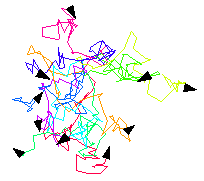

Labs for The Most Complex Machine
xTurtle Lab 4: Multiprocessing
A CENTRAL PROCESSING UNIT EXECUTES A PROGRAM one step at a time, fetching each instruction from memory and executing it before going on to the next instruction. In many cases, though, a problem can be broken down into sub-problems that could be solved at the same time. In parallel processing, several CPUs work simultaneously on a problem, each one solving a different sub-problem. This is one of the major techniques for speeding up the execution of programs.
Even when only one processor is available, it is sometimes natural to break down a program into parts that can be executed simultaneously. Multitasking can be applied to divide the single processor's time among the various parts of the program. The program won't be executed any more quickly, but the use of parallel processing "abstractions" might make the program easier to write.
In this lab, you will use the multitasking capabilities of the xTurtle programming language. In this language, it is possible to split (or fork) a process into several processes that will all execute simultaneously and independently. Each process will have its own turtle visible on the screen, so you can actually see what is going on. Although you will be seeing only simulated parallel processing, it would be at least theoretically possible for each process to run on its own CPU.
The background material for this lab is covered in Sections 10.1 and 10.2 of The Most Complex Machine. It would be useful, but not essential, for you to read that material before working on the lab.
This lab includes the following sections:
Start by clicking this button to launch xTurtle in its own window:
(For a full list of labs and applets, see the index page.)
Multiple Turtles
After launching xTurtle, select the first sample program, "Bugs.txt," from the pop-up menu at the top of the xTurtle window. Run the program by clicking on the "Run Program" button. You will see ten turtles wandering around on the screen. This is a very simple program, but it illustrates the basic multiprocessing command in xTurtle, the fork statement.
The statement fork(10) causes a single process to split into ten processes. Any commands in the program that follow the fork statement will be executed by each process independently and simultaneously. In the Bugs program, each of the ten processes goes into a loop that sends its turtle on a random walk, and so you see all ten turtles wandering aimlessly on the screen. Each turtle follows the same program, but each turtle chooses different random numbers and so each turtle follows its own random path. The first two exercises at the end of the lab ask you to add a few modifications to this program.
When a process is forked, all of the processes that are created start out in exactly the same state, with one small exception. The xTurtle language has a predefined variable named ForkNumber. This is a read-only variable; that is, you can test the value of this variable but you can't change its value. Each of the processes created by a fork statement gets its own value for ForkNumber. For the first process, the value of ForkNumber is 1, for the second the value is 2, and so forth. To test this, try executing the following commands. Type them on a single line in the input box at the bottom of the xTurtle window, and then click the "Do It" button:
fork(5) TellUser("ForkNumber = #ForkNumber")
When the computer executes the TellUser command, it substitutes the actual value of ForkNumber for "#ForkNumber". Make sure you understand what happens. (You have to type both commands in the input box on one line. If you execute ``fork(5)'' by itself, two processes will be created, but both processes will "die" before you get a chance to type in the next command.)
In the sample program "ParallelSpectrum.txt", the ForkNumber is used in the program in several calculations. Each process does the same calculation, but since different processes have different values for ForkNumber, the result will be different in each process. For example, "turn(4*ForkNumber)" will make Turtle #1 turn 4 degrees, Turtle #2 turn 8 degrees, Turtle #3 turn 12 degrees, and so on.
The sample program "TwoTasks.txt" shows how ForkNumber can be used to make several turtles do several completely different tasks. When you run this program, two processes are created with a fork command. Both processes execute an IF statement of the form:
IF ForkNumber = 1 THEN { do one thing } ELSE { do something else } END IFThe first turtle, with a ForkNumber of 1, does one task while the second turtle, with a ForkNumber of 2, does another, completely different task. You are asked to do something similar in Exercise 3 at the end of the lab.
Two other sample programs, "ParallelSnowflake.txt" and "Circles.txt," show that a program can contain more than one fork command. In these programs, the first fork command creates several processes. Each of these processes then goes on to execute a second fork command. When this happens, each process splits into several processes. You can see this clearly when you run "ParallelSnowflake.txt," which creates 216 processes with a sequence of three fork(6) commands.
The "Circles.txt" sample program illustrates another important fact. It shows how a declare statement works when it occurs after a fork. Every process will execute the declare statement separately, so that every process will have its own copy of the variable. Thus, the variable can be assigned different values in different processes. You will need to understand the "Circles.txt" program in order to do exercise 4 at the end of the lab.
On a separate web page, I've provided a set of six sample programs that use xTurtle multitasking to draw some interesting "tilings" of the plane. These are pictures that would be more difficult to draw without multitasking. If you like pretty pictures, you might want to take a look.
Scheduling
The operating system of a multitasking computer is in charge of scheduling all the processes. That is, it determines which process gets to run next and how long it will be permitted to run. The CPU, under the control of the operating system, will execute one process for a while, then switch to another, then to another, and so forth. In xTurtle, the scheduling is done by the xTurtle applet, but the objective is to simulate the way things are done in an actual multitasking computer system.
When you watch the execution of the "ParallelSnowflake.txt" or "Circles.txt" sample program, you'll see that the processes do not all run at exactly the same speed. As the system switches its attention from one process to another, there is some randomness in the amount of time that is spent on each process. The xTurtle program is set up to run this way by default, since it's the way real multitasking systems work.
However, the xTurtle applet has an option to run all the processes at exactly the same rate of speed. To turn this option on, click on the "Lock Step" checkbox in the bottom right corner of the xTurtle window. When this box is checked, all the turtles on the screen will move in "lock step." While this might not be an accurate simulation of multitasking, it can be pretty to watch. You might want to try executing some of the sample programs with this option turned on.
Shared Variables
In all the examples you have seen so far, the multiple processes are completely independent. The various turtles go about their business without interacting with the other turtles in any way. (This is not quite true, since the turtles have to share the same screen. You might have noticed that one turtle will sometimes wipe out the image of another turtle temporarily.)
Things can get more interesting when the processes have to communicate with each other. In xTurtle, processes communicate through shared variables. When a variable is declared before a fork command, there is only one copy of that variable, which is shared by all the processes. If any of those processes changes the value of the variable, then all the other processes can see the new value. This is the only form of communication between processes that can occur in xTurtle.
As explained in The Most Complex Machine, great care must be taken when shared variables are used for communication, so that one process does not change the value of a variable while another process is using that value. A process must obtain exclusive access to a shared variable while it is using that variable. This is the mutual exclusion problem. In xTurtle, the grab statement is provided to make mutual exclusion possible. A grab statement takes the form
GRAB <global variable name> THEN <statements> END GRABOnly one process at a time is allowed to "grab" a given variable. When a process comes to a grab statement, the computer checks to see whether another process has already grabbed the variable. If so, then the second process must wait until the first process releases its lock on the variable by finishing the execution of its grab statement. Only then is the second process allowed to grab the variable and execute the statements in its own grab statement. (Of course, this can cause big problems if a process grabs a variable and doesn't release it. Other processes that want to grab the variable will never get a chance to run at all.)
The statements inside a grab statement are called a critical region. As long as access to shared variables is confined to critical regions, processes can use the variables to communicate in relative safety.
Even with the grab statement, communication among processes can still be very complicated. A relatively straightforward example can be found in the sample program "SynchronizedRandomWalk.txt." Select this program from the pop-up menu, read the comments, and run the program. You will see two turtles executing identical random walks. One of the turtles selects a random angle to be used in the random walk and records it in the shared variable, angle. The other turtle reads the value from the shared variable and uses it. A second shared variable, control, is used in a grab statement to control access to angle. Exercise 6 asks you to modify this program so that more than two processes are involved.
Another example of shared variables is given in the sample program "ThreeNPlusOneMax.txt." Read the comments in the program and run the program. It will take a few seconds to run, and you won't see anything happening until the end, when the program reports the value that it has computed. In Exercise 7, you will work with a similar example.
The ThreeNPlusOneMax program also illustrates what happens when a fork command is used inside a subroutine: At the end of the subroutine, all the processes are "rejoined" into one process before the subroutine terminates. After the subroutine finishes, there is only one process to carry on. The forking is part of the subroutine's black box; it has no effect outside the subroutine. In the sample program, there is only one process to execute the TellUser statement at the end of the program.
Exercises
Exercise 1: Modify the sample program "Bugs.txt" so that each bug will leave a trail behind it as it wanders randomly around on the screen. Each of the trails should be a different color. The screen should look something like this after the program has run for a while:

Exercise 2: In the sample program "Bugs," ten "bugs" wander around on the screen. Real bugs, though, are born and die. Add "birth" and "death" to the Bugs program. Add birth by programming a one-in-twenty-five chance that a bug will split in two, each time it moves. (You can program a one-in-twenty-five chance by checking whether RandomInt(25) is 1.) Similarly, there should be a 1-in-25 chance that the bug will die.
To program death, you will need to know about another built-in xTurtle command, KillProcess. When a process executes the command KillProcess, it dies. The turtle for that process disappears from the screen. (Note that this command differs from Halt. If any process executes a Halt command, the entire program halts and so all the turtles die.)
Exercise 3: The sample program "TwoGraphs.txt" draws the graphs of two functions, one after the other. Instead of a single turtle that draws the graphs one after the other, the program could use two turtles that draw the graphs at the same time. Modify the program so that it does this. You only need to do a bit of work on the half-dozen or so lines at the very bottom of the program.
Exercise 4: Write a program that uses two fork(9) statements to draw a multiplication table like this one on the screen:
1 2 3 4 5 6 7 8 9 2 4 6 8 10 12 14 16 18 3 6 9 12 15 18 21 24 27 4 8 12 16 20 24 28 32 36 5 10 15 20 25 30 35 40 45 6 12 18 24 30 36 42 48 54 7 14 21 28 35 42 49 56 63 8 16 24 32 40 48 56 64 72 9 18 27 36 45 54 63 72 81The entry in row number row and column number col is row*col. Your program will be similar in outline to the sample program, "Circles.txt." You'll need to use the DrawText command to write each number on the screen. Recall that if num is a variable, then the command DrawText("#num") will output the value of num at the current turtle position.
Exercise 5: A recursive subroutine for drawing binary trees was covered in xTurtle Lab 3. Binary trees can also be drawn using multitasking. Each "fork" in the tree is represented by a fork command in the program. Here is a recursive subroutine that uses multitasking to draw a binary tree:
SUB tree(size, complexity) IF complexity > 0 THEN forward( size/2 ) fork( 2 ) IF ForkNumber = 1 THEN turn( 45 ) ELSE turn( -45 ) END IF tree( size/2, complexity - 1 ) END IF END SUBImplement this subroutine in a program that draws binary trees. Then modify the subroutine to add some color and an element of randomness. For example, instead of being always equal to two, the number of branches could be random. Instead of just dividing the size by 2, you could multiply it by a random amount. Try to make your program draw "bushes" that bear at least some resemblance to real bushes.
Exercise 6: Modify the sample program "SynchronizedRandomWalk.txt" so that instead of showing two turtles moving in identical random walks, it shows five turtles moving in identical random walks. Each of the turtles should start from a different position and should draw in a different color. The hard part of this exercise is passing off the "control" from one turtle to the next. You have to make sure that the control goes through the values 1, 2, 3, 4, 5, and then back to 1 so that each turtle will get a chance to move. Just as in the original program, Turtle #1 should select the random angle. Each of the other four turtles should use the same angle.
Exercise 7: The Sample program "SumOfSquares.txt" is a failed attempt to write a program that computes the value of the sum
12 + 22 + 32 + ... + 252
Run the program several times. It will give a different answer each time. (If you've turned on the "Lock Step" checkbox, then you'll get the same answer each time, but it will still be an incorrect answer.) Use a grab statement to fix the program so that it gives the correct answer. See the "ThreeNPlusOneMax.txt" sample program for an example of using a grab statement for a similar purpose. Write a short essay explaining carefully what goes wrong when the grab statement is omitted and how adding the grab statement fixes the problem.
Exercise 8: Design your own parallel processing xTurtle program. Try to make a nice colorful design, either random or symmetric. Hopefully, it will be fun to watch as multiple turtles construct the picture.
Exercise 9: Is it really sometimes easier to write a program using parallel processing than to write a standard program to do the same task? Write a short essay explaining and defending your opinion.
This is one of a series of labs written to be used with The Most Complex Machine: A Survey of Computers and Computing, an introductory computer science textbook by David Eck. For the most part, the labs are also useful on their own, and they can be freely used and distributed for private, non-commercial purposes. However, they should not be used as a formal part of a course unless The Most Complex Machine is also adopted for use in that course.--David Eck (eck@hws.edu), Summer 1998